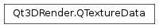

Qt3DRender.QTextureData¶
Synopsis¶
Functions¶
- def
addImageData(imageData) - def
comparisonFunction() - def
comparisonMode() - def
depth() - def
format() - def
height() - def
isAutoMipMapGenerationEnabled() - def
layers() - def
magnificationFilter() - def
maximumAnisotropy() - def
minificationFilter() - def
setAutoMipMapGenerationEnabled(isAutoMipMapGenerationEnabled) - def
setComparisonFunction(comparisonFunction) - def
setComparisonMode(comparisonMode) - def
setDepth(depth) - def
setFormat(arg__1) - def
setHeight(height) - def
setLayers(layers) - def
setMagnificationFilter(filter) - def
setMaximumAnisotropy(maximumAnisotropy) - def
setMinificationFilter(filter) - def
setTarget(target) - def
setWidth(width) - def
setWrapModeX(wrapModeX) - def
setWrapModeY(wrapModeY) - def
setWrapModeZ(wrapModeZ) - def
target() - def
width() - def
wrapModeX() - def
wrapModeY() - def
wrapModeZ()
Detailed Description¶
TheQTextureDataclass stores texture information such as the target, height, width, depth, layers, wrap, and if mipmaps are enabled.
-
class
PySide2.Qt3DRender.Qt3DRender.QTextureData¶ Creates a new
QTextureDatainstance.
-
PySide2.Qt3DRender.Qt3DRender.QTextureData.addImageData(imageData)¶ Parameters: imageData – PySide2.QtQuick.QSharedPointerAdds an extra image layer to the texture using
imageData.Note
The texture image should be loaded with the size specified on the texture. However, if no size is specified, the size of the first texture image file is used as default.
-
PySide2.Qt3DRender.Qt3DRender.QTextureData.comparisonFunction()¶ Return type: PySide2.Qt3DRender.Qt3DRender::QAbstractTexture.ComparisonFunctionReturns the current comparison function.
See also
PySide2.Qt3DRender.Qt3DRender::QTextureData.setComparisonFunction()
-
PySide2.Qt3DRender.Qt3DRender.QTextureData.comparisonMode()¶ Return type: PySide2.Qt3DRender.Qt3DRender::QAbstractTexture.ComparisonModeReturns the current comparison mode.
See also
PySide2.Qt3DRender.Qt3DRender::QTextureData.setComparisonMode()
-
PySide2.Qt3DRender.Qt3DRender.QTextureData.depth()¶ Return type: PySide2.QtCore.intReturns the texture depth.
See also
PySide2.Qt3DRender.Qt3DRender::QTextureData.setDepth()
-
PySide2.Qt3DRender.Qt3DRender.QTextureData.format()¶ Return type: PySide2.Qt3DRender.Qt3DRender::QAbstractTexture.TextureFormatReturns the texture format
See also
PySide2.Qt3DRender.Qt3DRender::QTextureData.setFormat()
-
PySide2.Qt3DRender.Qt3DRender.QTextureData.height()¶ Return type: PySide2.QtCore.intReturns the texture height.
See also
PySide2.Qt3DRender.Qt3DRender::QTextureData.setHeight()
-
PySide2.Qt3DRender.Qt3DRender.QTextureData.isAutoMipMapGenerationEnabled()¶ Return type: PySide2.QtCore.boolReturns whether the texture has auto mipmap generation enabled.
-
PySide2.Qt3DRender.Qt3DRender.QTextureData.layers()¶ Return type: PySide2.QtCore.intReturns the texture layers.
See also
PySide2.Qt3DRender.Qt3DRender::QTextureData.setLayers()
-
PySide2.Qt3DRender.Qt3DRender.QTextureData.magnificationFilter()¶ Return type: PySide2.Qt3DRender.Qt3DRender::QAbstractTexture.FilterReturns the current magnification filter.
See also
PySide2.Qt3DRender.Qt3DRender::QTextureData.setMagnificationFilter()
-
PySide2.Qt3DRender.Qt3DRender.QTextureData.maximumAnisotropy()¶ Return type: PySide2.QtCore.floatReturns the current maximum anisotropy.
See also
PySide2.Qt3DRender.Qt3DRender::QTextureData.setMaximumAnisotropy()
-
PySide2.Qt3DRender.Qt3DRender.QTextureData.minificationFilter()¶ Return type: PySide2.Qt3DRender.Qt3DRender::QAbstractTexture.FilterReturns the current minification filter.
See also
PySide2.Qt3DRender.Qt3DRender::QTextureData.setMinificationFilter()
-
PySide2.Qt3DRender.Qt3DRender.QTextureData.setAutoMipMapGenerationEnabled(isAutoMipMapGenerationEnabled)¶ Parameters: isAutoMipMapGenerationEnabled – PySide2.QtCore.boolSets whether the texture has automatic mipmap generation enabled, to
autoMipMap.See also
PySide2.Qt3DRender.Qt3DRender::QTextureData.isAutoMipMapGenerationEnabled()
-
PySide2.Qt3DRender.Qt3DRender.QTextureData.setComparisonFunction(comparisonFunction)¶ Parameters: comparisonFunction – PySide2.Qt3DRender.Qt3DRender::QAbstractTexture.ComparisonFunctionSets the comparison function to
comparisonFunction.See also
PySide2.Qt3DRender.Qt3DRender::QTextureData.comparisonFunction()
-
PySide2.Qt3DRender.Qt3DRender.QTextureData.setComparisonMode(comparisonMode)¶ Parameters: comparisonMode – PySide2.Qt3DRender.Qt3DRender::QAbstractTexture.ComparisonModeSets the comparison mode to
comparisonMode.See also
PySide2.Qt3DRender.Qt3DRender::QTextureData.comparisonMode()
-
PySide2.Qt3DRender.Qt3DRender.QTextureData.setDepth(depth)¶ Parameters: depth – PySide2.QtCore.intSets the texture depth to
depthSee also
PySide2.Qt3DRender.Qt3DRender::QTextureData.depth()
-
PySide2.Qt3DRender.Qt3DRender.QTextureData.setFormat(arg__1)¶ Parameters: arg__1 – PySide2.Qt3DRender.Qt3DRender::QAbstractTexture.TextureFormatSets the texture format to
format.See also
PySide2.Qt3DRender.Qt3DRender::QTextureData.format()
-
PySide2.Qt3DRender.Qt3DRender.QTextureData.setHeight(height)¶ Parameters: height – PySide2.QtCore.intSets the target height to
height.See also
PySide2.Qt3DRender.Qt3DRender::QTextureData.height()
-
PySide2.Qt3DRender.Qt3DRender.QTextureData.setLayers(layers)¶ Parameters: layers – PySide2.QtCore.intSets the texture layers to
layers.See also
PySide2.Qt3DRender.Qt3DRender::QTextureData.layers()
-
PySide2.Qt3DRender.Qt3DRender.QTextureData.setMagnificationFilter(filter)¶ Parameters: filter – PySide2.Qt3DRender.Qt3DRender::QAbstractTexture.FilterSets the magnification filter to
filter.See also
PySide2.Qt3DRender.Qt3DRender::QTextureData.magnificationFilter()
-
PySide2.Qt3DRender.Qt3DRender.QTextureData.setMaximumAnisotropy(maximumAnisotropy)¶ Parameters: maximumAnisotropy – PySide2.QtCore.floatSets the maximum anisotropy to
maximumAnisotropy.See also
PySide2.Qt3DRender.Qt3DRender::QTextureData.maximumAnisotropy()
-
PySide2.Qt3DRender.Qt3DRender.QTextureData.setMinificationFilter(filter)¶ Parameters: filter – PySide2.Qt3DRender.Qt3DRender::QAbstractTexture.FilterSets the minification filter to
filter.See also
PySide2.Qt3DRender.Qt3DRender::QTextureData.minificationFilter()
-
PySide2.Qt3DRender.Qt3DRender.QTextureData.setTarget(target)¶ Parameters: target – PySide2.Qt3DRender.Qt3DRender::QAbstractTexture.TargetSets the target texture to
target.See also
PySide2.Qt3DRender.Qt3DRender::QTextureData.target()
-
PySide2.Qt3DRender.Qt3DRender.QTextureData.setWidth(width)¶ Parameters: width – PySide2.QtCore.intSets the texture width to
width.See also
PySide2.Qt3DRender.Qt3DRender::QTextureData.width()
-
PySide2.Qt3DRender.Qt3DRender.QTextureData.setWrapModeX(wrapModeX)¶ Parameters: wrapModeX – PySide2.Qt3DRender.Qt3DRender::QTextureWrapMode.WrapModeSets the wrap mode X to
wrapModeX.See also
PySide2.Qt3DRender.Qt3DRender::QTextureData.wrapModeX()
-
PySide2.Qt3DRender.Qt3DRender.QTextureData.setWrapModeY(wrapModeY)¶ Parameters: wrapModeY – PySide2.Qt3DRender.Qt3DRender::QTextureWrapMode.WrapModeSets the wrap mode Y to
wrapModeY.See also
PySide2.Qt3DRender.Qt3DRender::QTextureData.wrapModeY()
-
PySide2.Qt3DRender.Qt3DRender.QTextureData.setWrapModeZ(wrapModeZ)¶ Parameters: wrapModeZ – PySide2.Qt3DRender.Qt3DRender::QTextureWrapMode.WrapModeSets the wrap mode Z to
wrapModeZ.See also
PySide2.Qt3DRender.Qt3DRender::QTextureData.wrapModeZ()
-
PySide2.Qt3DRender.Qt3DRender.QTextureData.target()¶ Return type: PySide2.Qt3DRender.Qt3DRender::QAbstractTexture.TargetReturns the texture data target.
See also
PySide2.Qt3DRender.Qt3DRender::QTextureData.setTarget()
-
PySide2.Qt3DRender.Qt3DRender.QTextureData.width()¶ Return type: PySide2.QtCore.intReturns the texture width.
See also
PySide2.Qt3DRender.Qt3DRender::QTextureData.setWidth()
-
PySide2.Qt3DRender.Qt3DRender.QTextureData.wrapModeX()¶ Return type: PySide2.Qt3DRender.Qt3DRender::QTextureWrapMode.WrapModeReturns the current wrap mode X.
See also
PySide2.Qt3DRender.Qt3DRender::QTextureData.setWrapModeX()
-
PySide2.Qt3DRender.Qt3DRender.QTextureData.wrapModeY()¶ Return type: PySide2.Qt3DRender.Qt3DRender::QTextureWrapMode.WrapModeReturns the current wrap mode Y.
See also
PySide2.Qt3DRender.Qt3DRender::QTextureData.setWrapModeY()
-
PySide2.Qt3DRender.Qt3DRender.QTextureData.wrapModeZ()¶ Return type: PySide2.Qt3DRender.Qt3DRender::QTextureWrapMode.WrapModeReturns the current wrap mode Z.
See also
PySide2.Qt3DRender.Qt3DRender::QTextureData.setWrapModeZ()
© 2018 The Qt Company Ltd. Documentation contributions included herein are the copyrights of their respective owners. The documentation provided herein is licensed under the terms of the GNU Free Documentation License version 1.3 as published by the Free Software Foundation. Qt and respective logos are trademarks of The Qt Company Ltd. in Finland and/or other countries worldwide. All other trademarks are property of their respective owners.